LISA 공간 자기상관 + HDBSCAN 환경 분류 → 정책 개입 우선순위 도출
서울시 데이터 분석 경진대회 · 2026 50m 격자 단위 · 250,450개 격자 HH 52,298 + HL 1,092
※ HDBSCAN 노이즈(-1) 제외 후 분석 사용 격자: 24,824개 · 군집별 환경 프로필 분석에 활용
※ LISA 4-Cluster (전체 분포): HH 46,638 · LL 93,606 · LH 4,045 · HL 1,163 (geometry 폴리곤 라벨 기준)
전체 25만 격자에서 정책 개입 우선 행정동까지 — 4단계 funnel.
Step 0 250,450 격자 → Step 1 위험도 평가 → Step 2 LISA HH 52,298 + HL 1,092 → Step 3 HDBSCAN 37개 군집 → Step 4 정책 개입 TOP 15
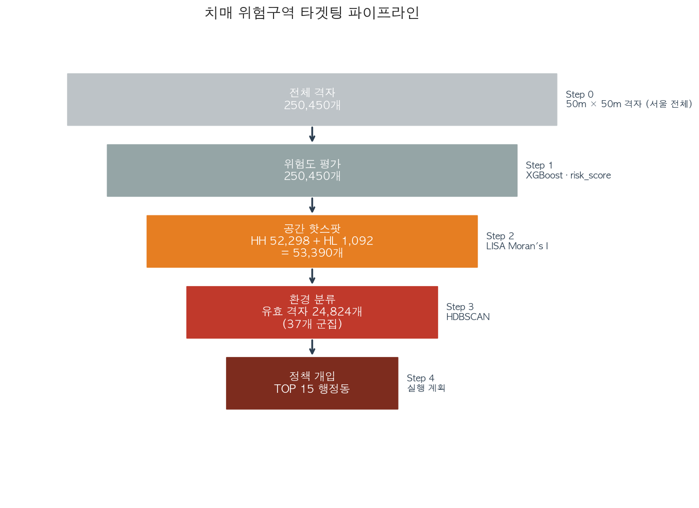
공간적 위험 형태(LISA)와 물리적 특성(HDBSCAN)을 결합한 핵심 분석.
HH/HL 격자가 어떤 환경 군집에 속하는지 매트릭스.
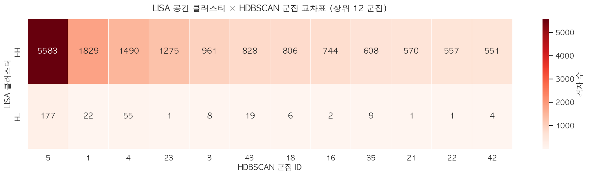
상위 12 군집의 핵심 feature 정규화 비교 (진할수록 높음).
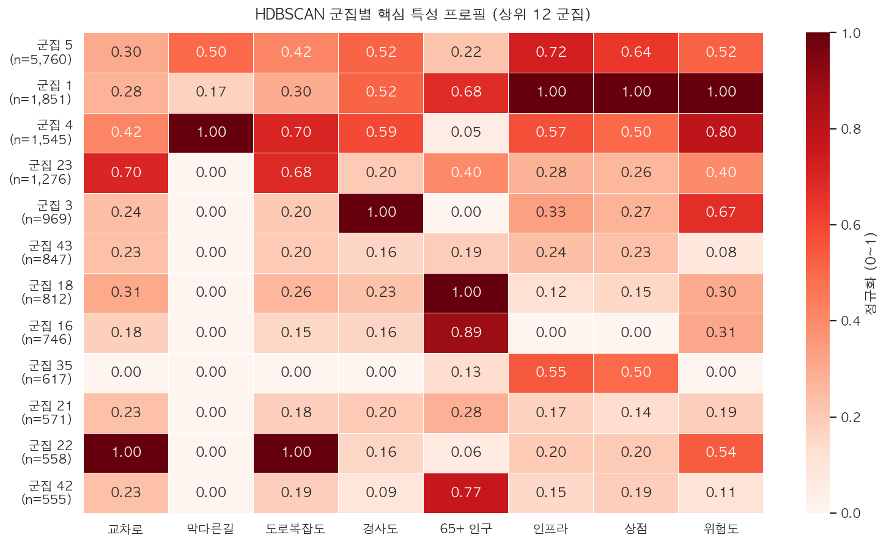
각 군집의 환경 페르소나 — 도심 상권형 / 골목 미로형 / 경사·언덕형 / 인구 밀집형 / 복합형.
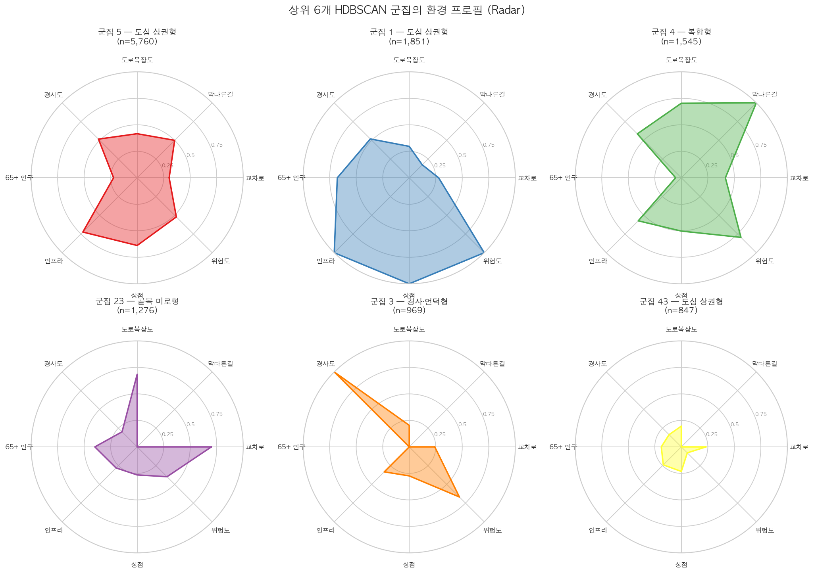
전체 37개 유효 군집 중 격자 수 상위 12개. 노이즈(-1) 28,566개는 제외.
| 군집 ID | n | 자동 별명 | Top Feature 1 | Top Feature 2 |
|---|---|---|---|---|
| 5 | 5,760 | 도심 상권형 | 인프라 | 상점 |
| 1 | 1,851 | 도심 상권형 | 인프라 | 상점 |
| 4 | 1,545 | 복합형 | 막다른길 | 위험도 |
| 23 | 1,276 | 골목 미로형 | 교차로 | 도로복잡도 |
| 3 | 969 | 경사·언덕형 | 경사도 | 위험도 |
| 18, 16, 21, 42 | 2,486 | 인구 밀집·인프라 소외형 | 65+ 인구 | 교차로 |
HH/HL 격자 + TOP 5 행정동 표시. 인터랙티브에서 호버 시 격자별 상세 정보.
geopandas geometry 기반 폴리곤 시각화. 줌·팬·클러스터별 토글 가능.
🔑 차성준 한 줄 정의 (가장 직관적):
HH 위험한 지역 사이에 위험한 지역 → 구역 단위 관리 필요
HL 안전한 지역 사이에 위험한 지역 → 사각지대, 특히 주의 필요 ⭐
LH 위험한 지역 사이에 안전한 지역 → 안전 섬
LL 안전한 지역 사이에 안전한 지역 → 일반 안전 지역
| 유형 | 한 줄 정의 | 실종/발견 시사점 | 정책 함의 |
|---|---|---|---|
| HH | 위험한 지역 사이의 위험한 지역 | 치매 노인 실종 발생 多 — 광역 핫스팟 | 구역 단위 관리 · 면(Area) 단위 인프라 정비 |
| HL | 안전한 지역 사이의 위험한 지역 | 사각지대 — LL에서 실종된 노인이 이쪽으로 흘러올 가능성, 발견 거점 | 특히 주의 필요 · 점(Point) 단위 즉각 조치 (스마트 횡단보도, 비상벨) |
| LH | 위험한 지역 사이의 안전한 지역 | HH 클러스터에 둘러싸인 안전 섬 — 대피 경로 후보 | 대피 동선·안내 표지로 활용 |
| LL | 안전한 지역 사이의 안전한 지역 | 일반 안전 지역. 단, 여기서 실종이 발생하면 인접 HL로 이동·발견 가능성 | 저우선 (모니터링만) |
핵심 가설 (차성준 제안):
① HH 점 밀도 높은 지역 = 실종 발생 多. 광역 위험구역으로 우선 정비.
② LL에서 실종이 발생하면 인접한 HL 격자에서 발견 확률 높음. HL을 "사각지대 + 발견 거점" 이중 의미로 해석 가능.
③ HL 격자 1,163개는 핀셋 정책으로 최대 효과 (작은 비용으로 다수 LL 격자 커버).
🗒️ 분석 방법론 노트 — 반드시 인지하고 갈 것
• Moran's I는 PCA 기반 risk_score를 입력으로 사용. 따라서 risk_score 자체의 변수별 인사이트보다, Moran 결과(HH/HL/LH/LL) × HDBSCAN 클러스터 결합 인사이트가 핵심.
• HDBSCAN cluster = -1 인 격자(28,566개)는 어떤 군집에도 속하지 않은 외부 = 배경으로 처리. 시각화·통계에서 회색 또는 제외.
• 유효 군집은 약 37개 (이전 90~100개 추정 → 실 데이터 검증 결과 37개로 확정).
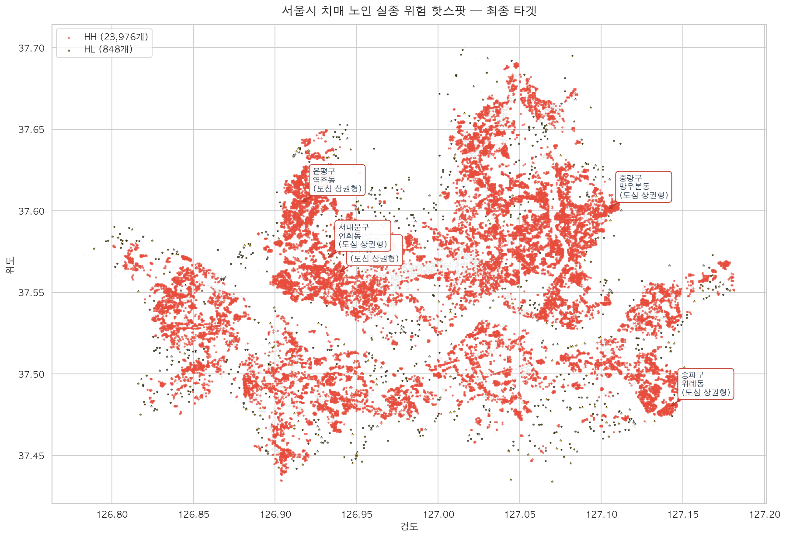
위 모든 클러스터 시각화를 한 페이지에 묶음.
격자 수 기준 정렬. 군집 유형별로 다른 정책 개입 권장.
HH 격자 수 기준. 자동 명명된 dominant 군집 유형 표시.
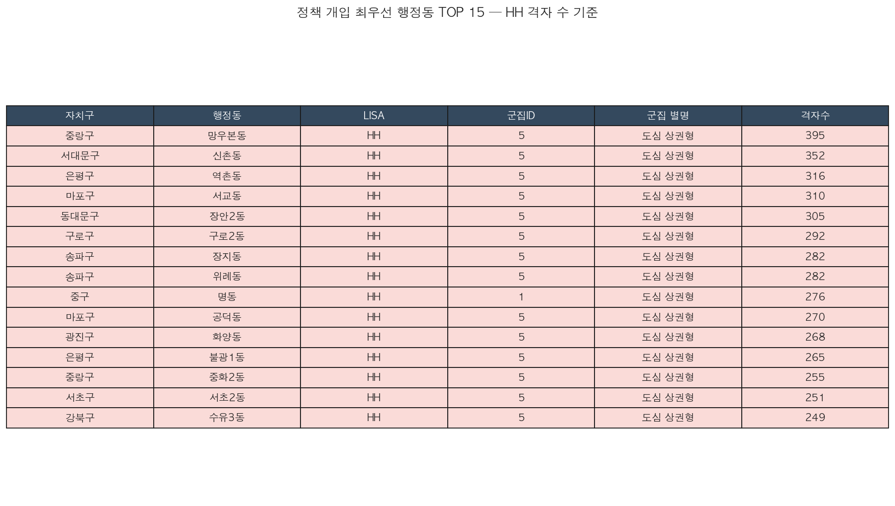
| 순위 | 자치구 | 행정동 | HH 격자 | Dominant 군집 | 군집 별명 |
|---|---|---|---|---|---|
| 1 | 중랑구 | 망우본동 | 395 | 5 | 도심 상권형 |
| 2 | 서대문구 | 신촌동 | 352 | 5 | 도심 상권형 |
| 3 | 은평구 | 역촌동 | 316 | 5 | 도심 상권형 |
| 4 | 마포구 | 서교동 | 310 | 5 | 도심 상권형 |
| 5 | 동대문구 | 장안2동 | 305 | 5 | 도심 상권형 |
※ 이전 표시했던 숫자 (신촌동 86, 역촌동 71 등)는 HDBSCAN 노이즈 제외 후 격자 수였음. 이번 표는 HH 전체 격자 수.
| 군집 유형 | 환경 특징 | 정책 개입 | 예상 예산 |
|---|---|---|---|
| 물리적 고립형 | 막다른길·경사도 ↑ | 치매 안심 유도선, 스마트 가로등, 배회 감지 CCTV | 동당 5억원 |
| 인구 밀집·인프라 소외형 | 65+ 인구 ↑, 인프라 ↓ | 찾아가는 치매안심센터 버스, 치매 파수꾼 (배달원·우체부) | 동당 1.5억원 |
| 도심 상권형 | 인프라·상점 ↑ | 상가 협력 안전망, AI CCTV, 보호구역 표지 | 동당 3억원 |
| 골목 미로형 | 교차로·도로복잡도 ↑ | 보행자 안내 표지, 교차로 GPS 신호 보강 | 동당 2억원 |
| 경사·언덕형 | 경사도 ↑ | 안전 손잡이 설치, 비상벨, 응급대응 동선 | 동당 1억원 |
발생률 1위 (14.17/10k, 평균의 4배). 도심 4구(종로·중구·용산·서대문) 비교.
인구 보정 후 종로가 압도적 1위.
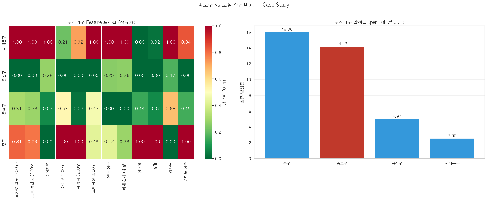
인사동·익선동 일대 격자별 위험도.
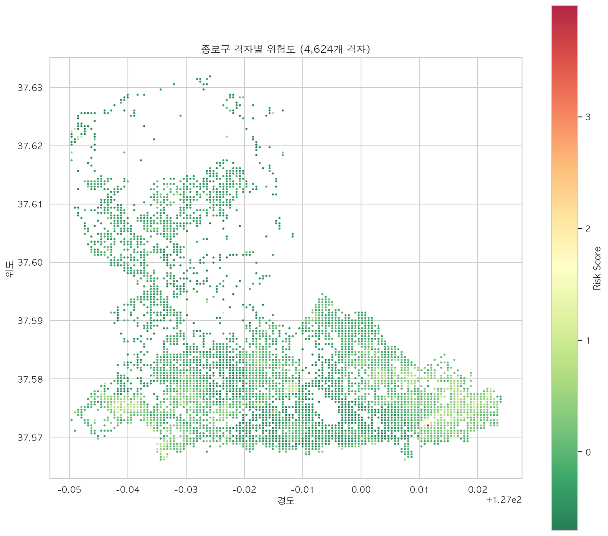
건수 vs 발생률 vs 위험도 — 인구 보정의 중요성.
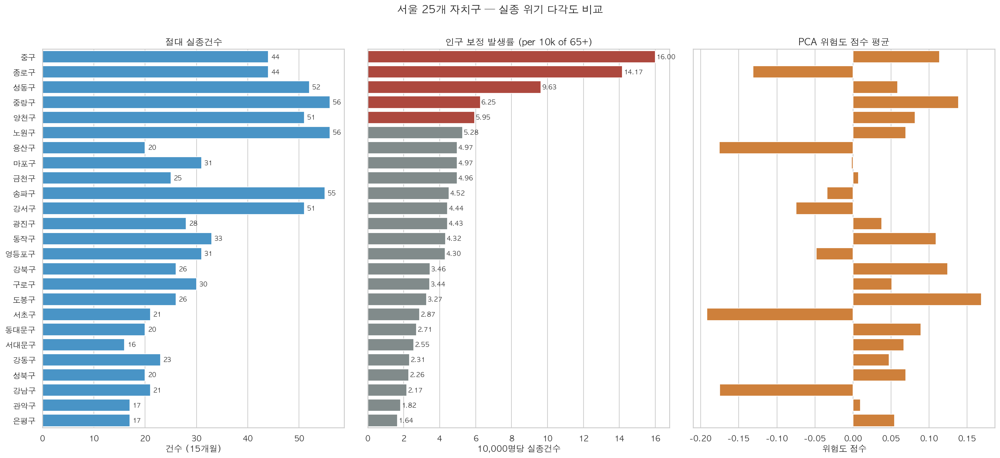
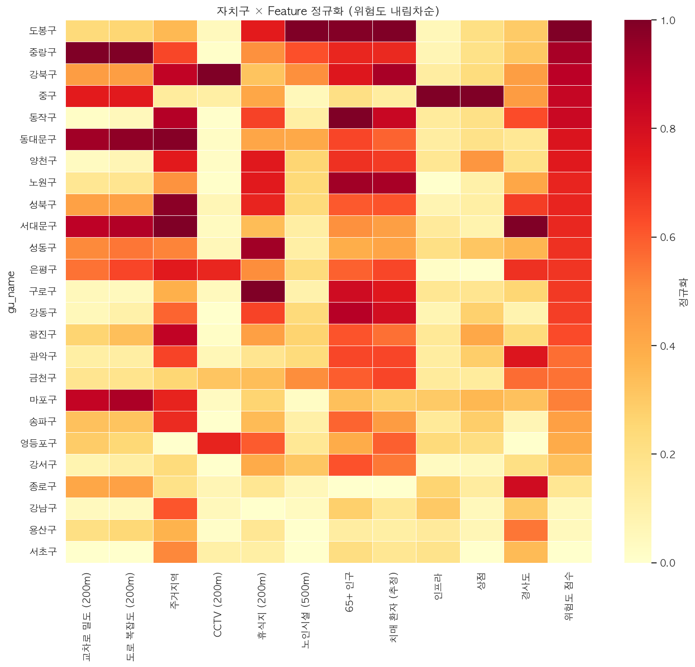
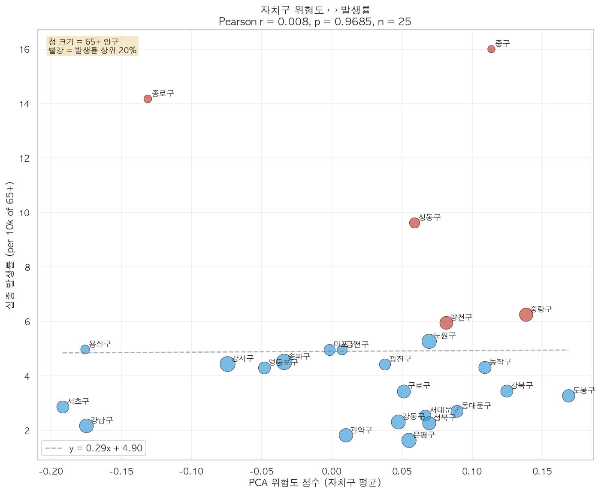
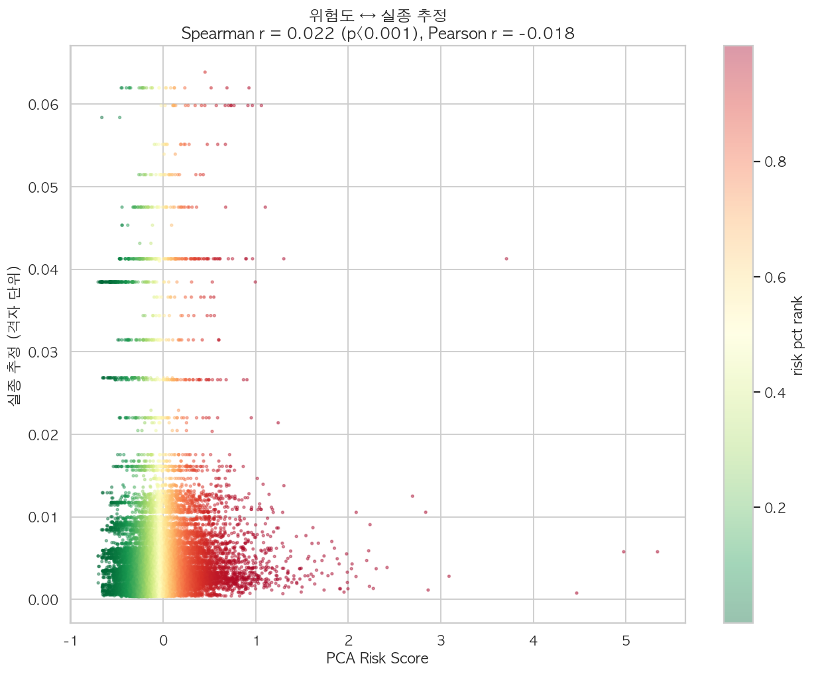
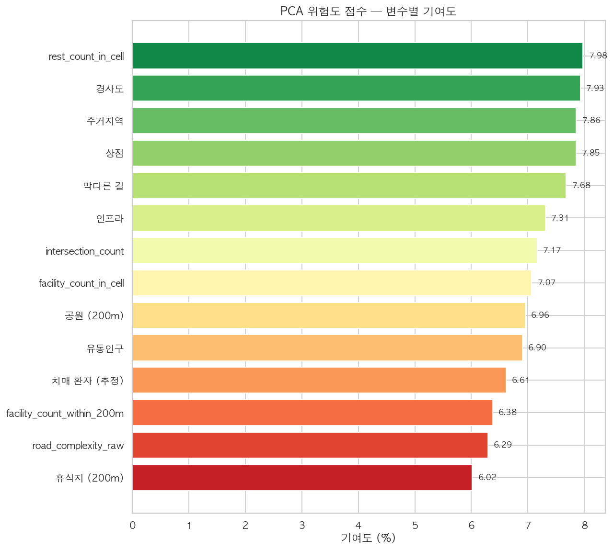
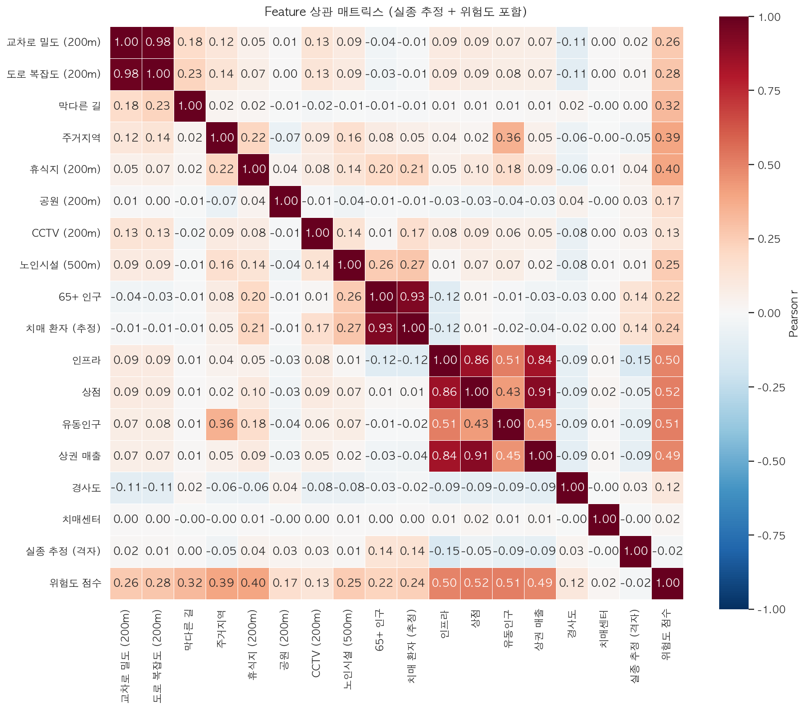
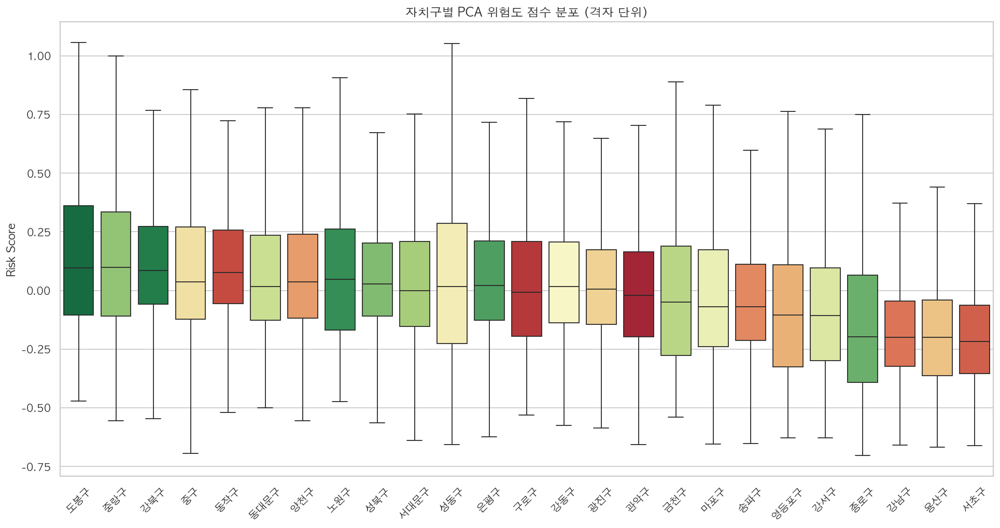
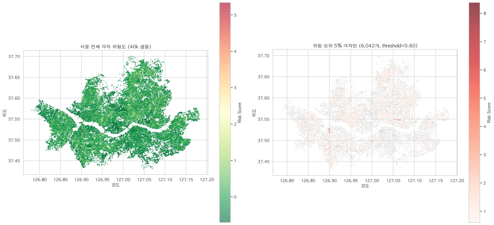